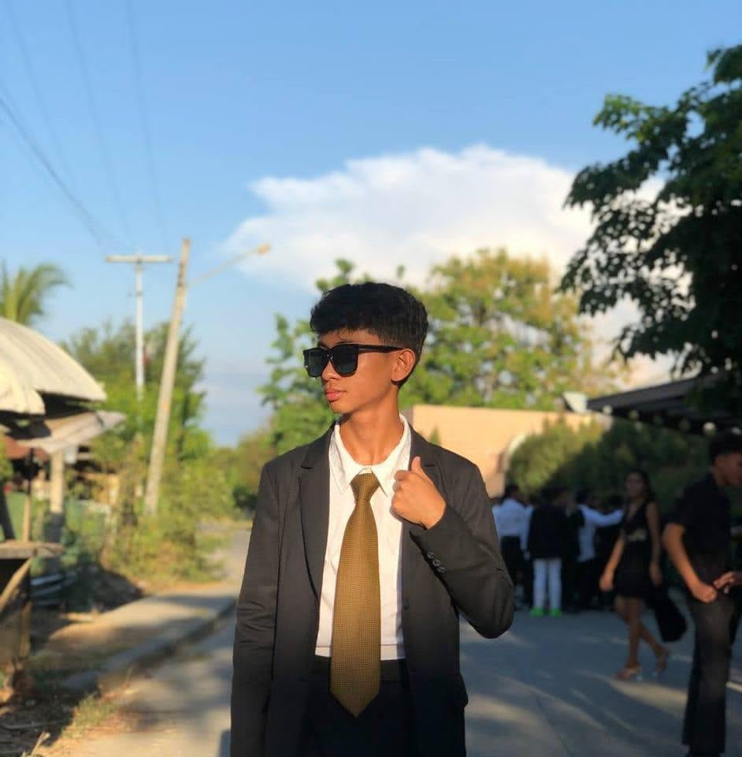

My Social Media AccountsHELLO, I'M
CRIS LAWRENCE C. QUINTO
UI / UX DESIGNER
Welcome to my portfolio, where I showcase my passion for creating intuitive and visually engaging user experiences. As a UI/UX designer, I focus on blending creativity with functionality to design solutions that truly connect with users. I'm excited to share my work and the design journey behind each project.